동화 속 달토끼가 현실로!🐰 아이들의 첫 인절미 만들기
안녕하세요, 생각공작소입니다. :)
추석이 지나고 가을이 깊어가는 10월
우리 아이들과 함께 특별한 요리 활동을 진행했습니다!
바로 '달토끼가 만들어준 인절미' 만들기 활동입니다 !
고소하고 쫀득한 인절미를 만들어보는 시간이었답니다. 🐰🌕
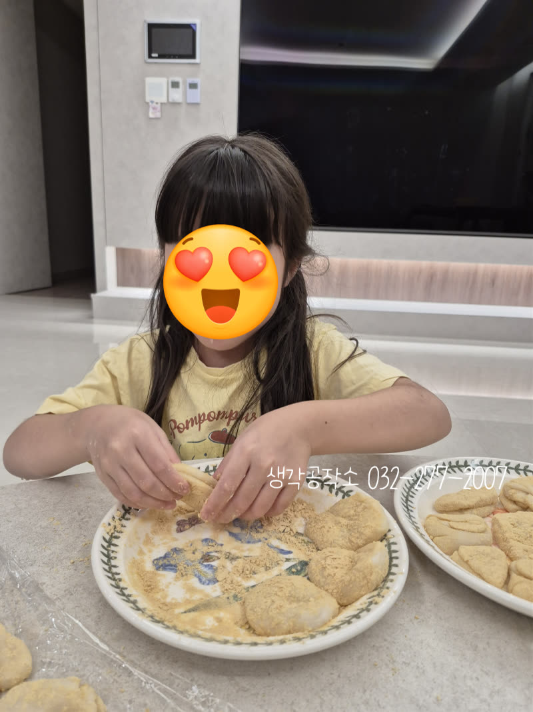
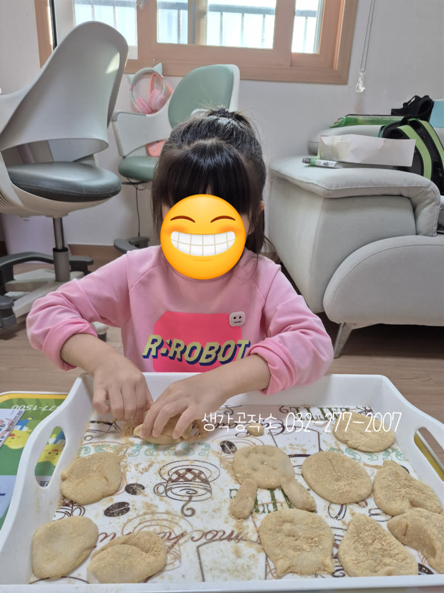
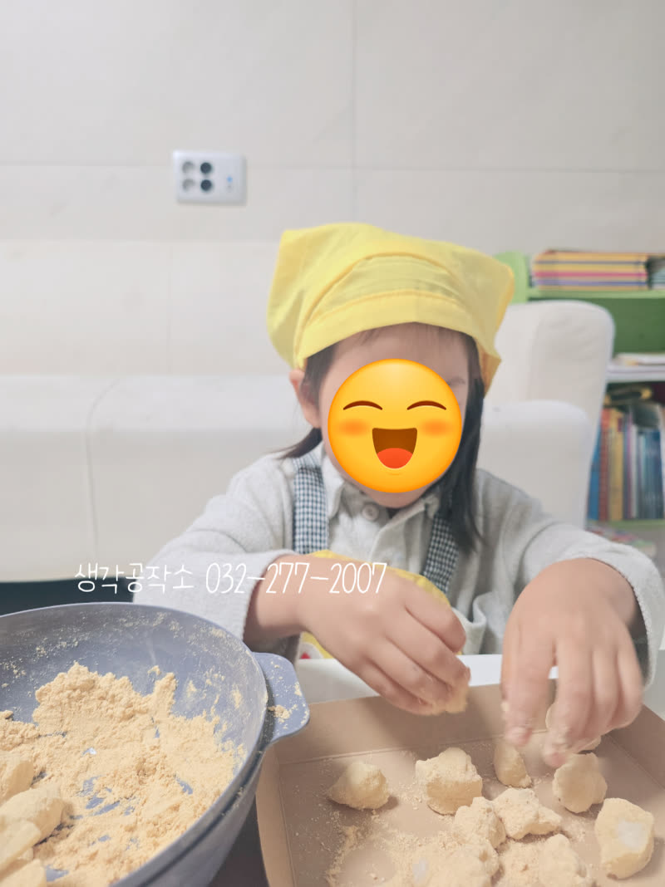
본격적인 요리에 앞서,
아이들은 선생님과 함께 달토끼 이야기를 들었습니다!
"달님 위에 사는 토끼가 방아를 찧어 떡을 만든대요!"
"우리도 달토끼처럼 맛있는 떡을 만들어볼까요?"
동화 속 이야기가 현실이 되는 순간,
아이들의 눈망울이 반짝반짝 빛났습니다. 🌙✨
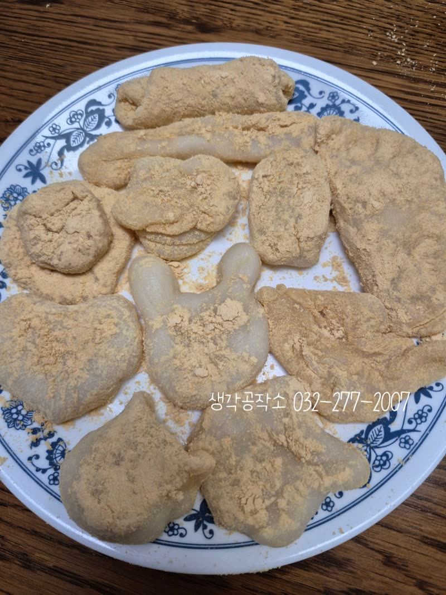
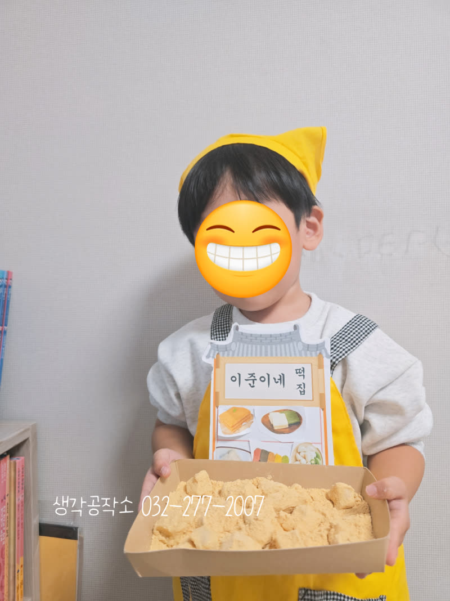
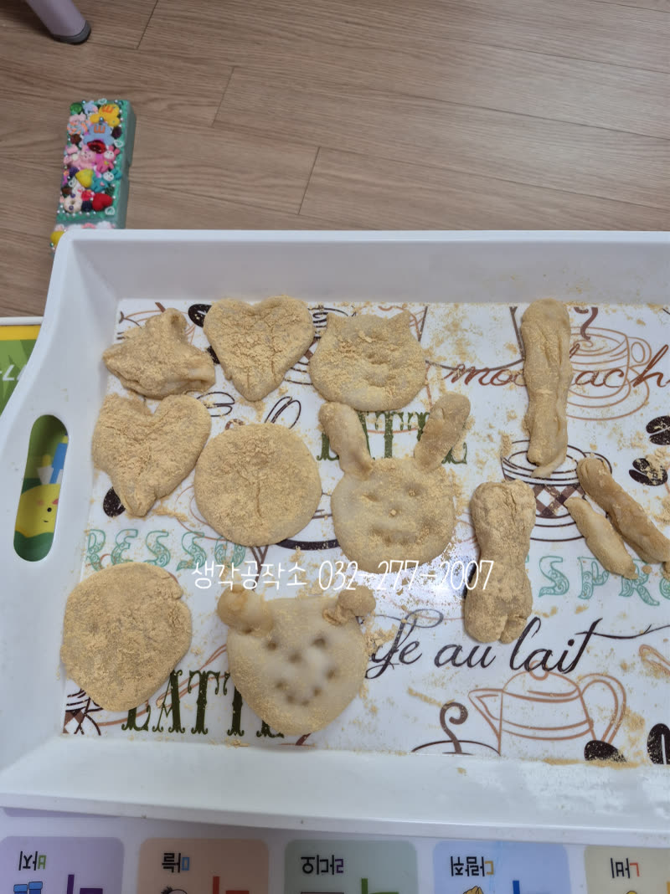
귀여운 명찰까지 달고 나니,
진짜 떡집 사장님이 된 것 같았어요. 😊
"어서오세요! 우리 떡집에 오신 걸 환영합니다!"
아이들의 당당한 목소리에서 벌써부터 자신감이 뿜뿜 느껴졌답니다! ✨
찹쌀가루에 소금과 설탕을 넣고
아이들이 직접 섞어보았습니다.
"보들보들해요!" "가루가 날려요~"
작은 손으로 열심히 섞는 모습이 정말 진지한 요리사 같았어요. 👨🍳
선생님이 미리 준비한 뜨거운 물을
조금씩 넣으며 걸죽한 반죽을 만들었습니다.
"우와, 점점 떡 같아져요!"
반죽의 변화를 관찰하며 아이들의 호기심이 더욱 커졌답니다. 🔍
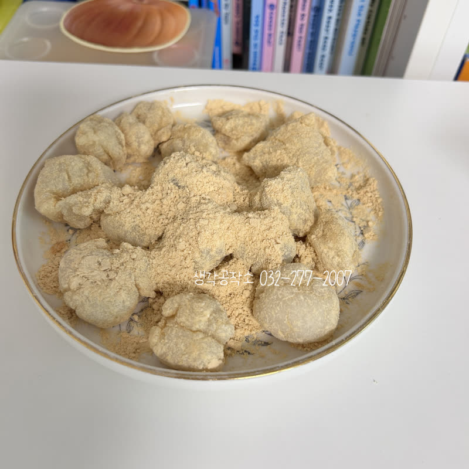
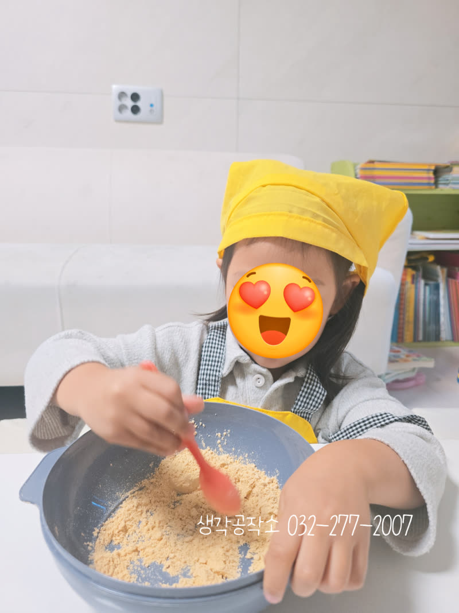
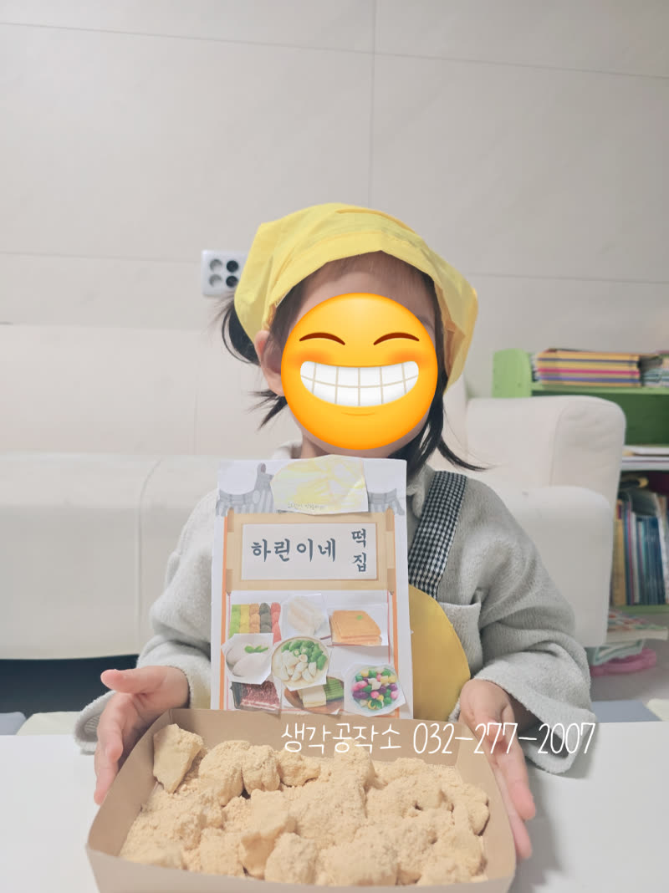
손에 식용유를 살짝 바르고,
아이들이 원하는 모양으로 반죽을 빚어보았습니다.
하트 모양, 동그란 모양, 토끼 모양, 당근 모양...
아이들의 상상력이 더해지니
세상에 하나뿐인 특별한 떡들이 탄생했어요! 💛🧡
"저는 토끼 모양으로 만들 거예요!"
"저는 하트 모양이요!"
만든 떡에 고소한 콩고물을 묻히는 시간!
콩고물을 묻히는 과정에서
아이들의 손과 얼굴에도 콩고물이 묻었지만,
그 모습이 더욱 사랑스러웠답니다. 😊
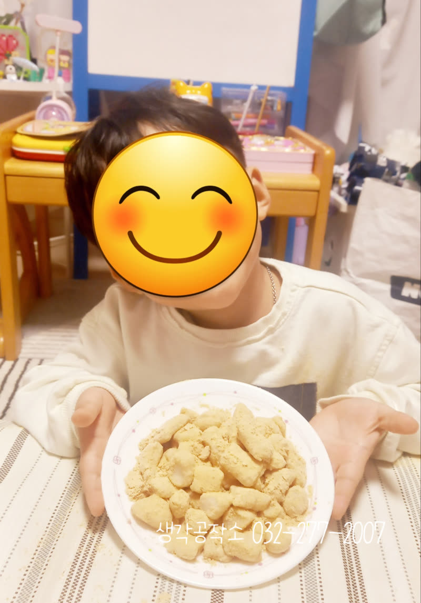
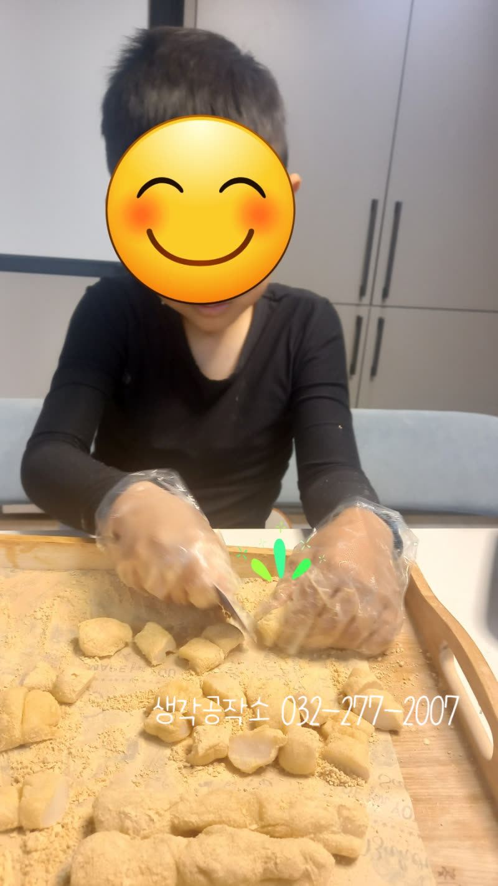
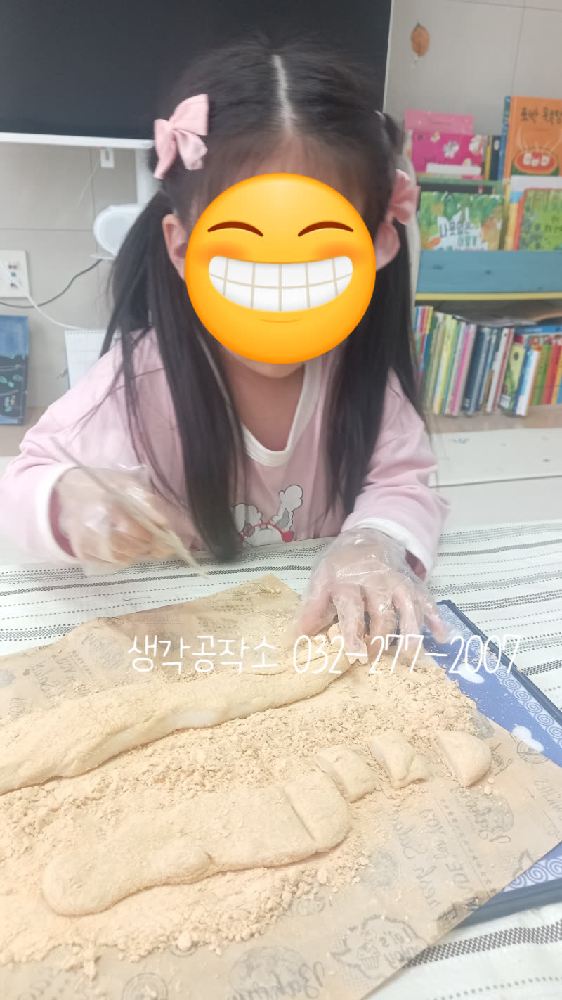
완성된 인절미를 예쁜 상자에 담으니
정말 떡집에서 파는 것 같았어요!
특별한 인절미가 완성되었습니다. 🎁
"엄마, 아빠 드릴 거예요!"
"동생이랑 나눠 먹을래요!"
자신이 만든 떡을 자랑스럽게 들고
환하게 웃는 아이들의 모습에서
뿌듯함과 성취감이 가득 느껴졌습니다. 🥰
✨ 동화 속 이야기를 요리로 상상력을 키우고
✨ 만지고 섞고 빚으며 촉각, 소근육을 발달시키고
✨ 따뜻한 온도, 질감 등 다양한 감각을 경험하고
✨ 요리 과정을 따라하며 집중력, 인내심을 기르고
✨ 완성된 작품을 통해 성취감, 자신감을 얻습니다
무엇보다 "내가 만들었어요!" 자랑스럽게 말하는
아이들의 표정이 가장 빛났던 순간이었습니다. 😊
오감 쑥쑥! 생각 쑥쑥!
📞 생각공작소 032-277-2007